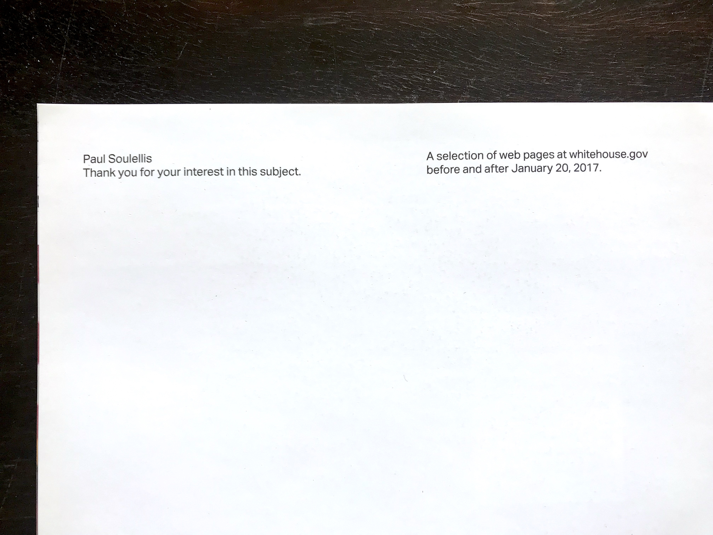
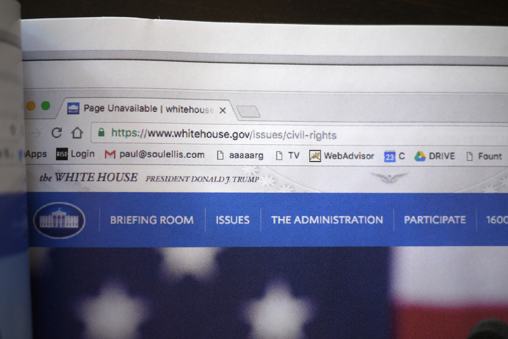
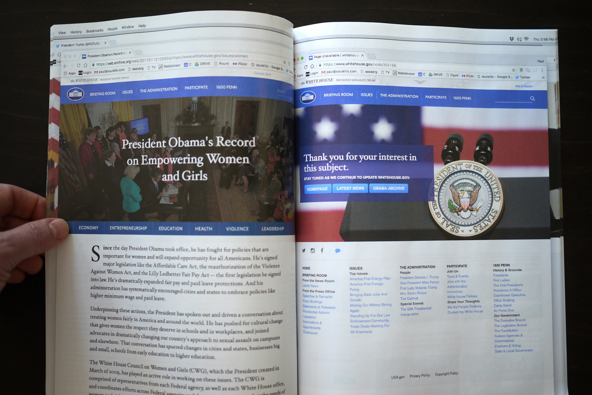
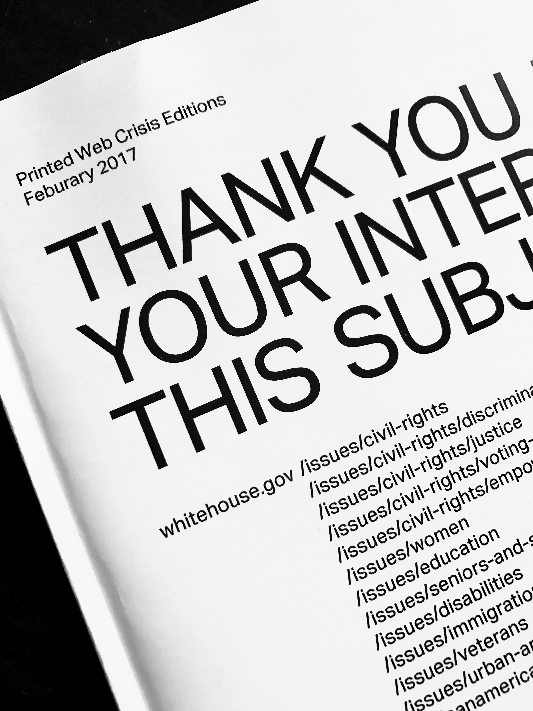

Thank you for your interest in this subject. (2017)

A selection of 22 web pages at whitehouse.gov. The zine presents the last (Obama) and first (Trump) views cached by the Internet Archive on January 20, 2017, as the website changed (at approximately 5:00pm). In 2018 the website was completely redesigned with new content, and the placeholder “Thank you for your interest in this subject” page is now permanently gone (as is the Obama-era content).
8.5 in. x 11 in. zine
44 pages + cover


Download PDF
Purchase print edition
